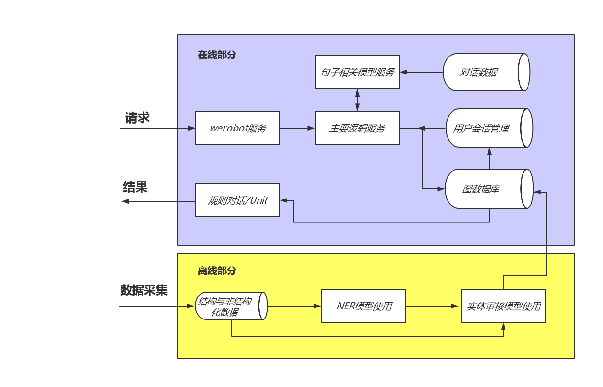
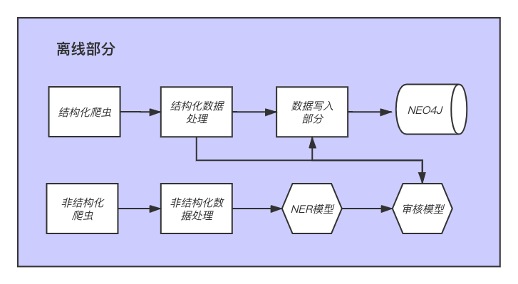

第四章:离线部分
4.1 离线部分简要分析¶
- 学习目标:
- 了解离线部分的数据流水线以及组成部分.
- 了解各个组成部分的作用.
- 离线部分架构图:

- 离线部分架构展开图:

- 离线部分简要分析:
- 根据架构展开图图，离线部分可分为两条数据流水线，分别用于处理结构化数据和非结构化数据. 这里称它们为结构化数据流水线和非结构化数据流水线.
- 结构化数据流水线的组成部分:
- 结构化数据爬虫: 从网页上抓取结构化的有关医学命名实体的内容.
- 结构化数据的清洗: 对抓取的内容进行过滤和清洗, 以保留需要的部分.
- 命名实体审核: 对当前命名实体进行审核, 来保证这些实体符合我们的要求.
- 命名实体写入数据库: 将审核后的命名实体写入数据库之中, 供在线部分使用.
- 非结构化数据流水线的组成部分:
- 非结构化数据爬虫: 从网页上抓取非结构化的包含医学命名实体的文本.
- 非结构化数据清洗: 对非结构化数据进行过滤和清洗, 以保留需要的部分.
- 命名实体识别: 使用模型从非结构化文本中获取命名实体.
- 命名实体审核: 对当前命名实体进行审核, 来保证这些实体符合我们的要求.
- 命名实体写入数据库: 将审核后的命名实体写入数据库之中, 供在线部分使用.
- 说明:
- 因为本项目是以AI为核心的项目, 因为结构化与非结构化的数据爬虫和清洗部分的内容这里不做介绍, 但同学们要知道我们的数据来源.
4.2 结构化数据流水线¶
- 学习目标:
- 了解需要进行命名实体审核的数据内容.
- 掌握结构化数据流水线中命名实体审核的过程.
- 掌握结构化数据流水线中命名实体写入的过程.
- 需要进行命名实体审核的数据内容:
...
踝部急性韧带损伤.csv
踝部扭伤.csv
踝部骨折.csv
蹄铁形肾.csv
蹼状阴茎.csv
躁狂抑郁症.csv
躁狂症.csv
躁郁症.csv
躯体形式障碍.csv
躯体感染伴发的精神障碍.csv
躯体感染所致精神障碍.csv
躯体感觉障碍.csv
躯体疾病伴发的精神障碍.csv
转换性障碍.csv
转移性小肠肿瘤.csv
转移性皮肤钙化病.csv
转移性肝癌.csv
转移性胸膜肿瘤.csv
转移性骨肿瘤.csv
轮状病毒性肠炎.csv
轮状病毒所致胃肠炎.csv
软产道异常性难产.csv
...
- 每个csv文件的名字都是一种疾病名.
- 文件位置: /data/doctor_offline/structured/noreview/
- 以躁狂症.csv为例, 有如下内容:
躁郁样
躁狂
行为及情绪异常
心境高涨
情绪起伏大
技术狂躁症
攻击行为
易激惹
思维奔逸
控制不住的联想
精神运动性兴奋
- csv文件的内容是该疾病对应的症状, 每种症状占一行.
- 文件位置: /data/doctor_offline/structured/noreview/躁狂症.csv
- 进行命名实体审核:
- 进行命名实体审核的工作我们这里使用AI模型实现, 包括训练数据集, 模型训练和使用的整个过程, 因此这里内容以独立一章的形成呈现给大家, 具体参见第五章: 命名实体审核任务.
- 删除审核后的可能存在的空文件:
# Linux 命令-- 删除当前文件夹下的空文件
find ./ -name "*" -type f -size 0c | xargs -n 1 rm -f
- 代码位置: 在/data/doctor_offline/structured/reviewed/目录下执行.
- 命名实体写入数据库:
- 将命名实体写入图数据库的原因:
- 写入的数据供在线部分进行查询，根据用户输入症状来匹配对应疾病.
- 将命名实体写入图数据库代码:
# 引入相关包
import os
import fileinput
from neo4j import GraphDatabase
from config import NEO4J_CONFIG
driver = GraphDatabase.driver( **NEO4J_CONFIG)
def _load_data(path):
"""
description: 将path目录下的csv文件以指定格式加载到内存
:param path: 审核后的疾病对应症状的csv文件
:return: 返回疾病字典，存储各个疾病以及与之对应的症状的字典
{疾病1: [症状1, 症状2, ...], 疾病2: [症状1, 症状2, ...]
"""
# 获得疾病csv列表
disease_csv_list = os.listdir(path)
# 将后缀.csv去掉, 获得疾病列表
disease_list = list(map(lambda x: x.split(".")[0], disease_csv_list))
# 初始化一个症状列表, 它里面是每种疾病对应的症状列表
symptom_list = []
# 遍历疾病csv列表
for disease_csv in disease_csv_list:
# 将疾病csv中的每个症状取出存入symptom列表中
symptom = list(map(lambda x: x.strip(),
fileinput.FileInput(os.path.join(path, disease_csv))))
# 过滤掉所有长度异常的症状名
symptom = list(filter(lambda x: 0<len(x)<100, symptom))
symptom_list.append(symptom)
# 返回指定格式的数据
return dict(zip(disease_list, symptom_list))
def write(path):
"""
description: 将csv数据写入到neo4j, 并形成图谱
:param path: 数据文件路径
"""
# 使用_load_data从持久化文件中加载数据
disease_symptom_dict = _load_data(path)
# 开启一个neo4j的session
with driver.session() as session:
for key, value in disease_symptom_dict.items():
cypher = "MERGE (a:Disease{name:%r}) RETURN a" %key
session.run(cypher)
for v in value:
cypher = "MERGE (b:Symptom{name:%r}) RETURN b" %v
session.run(cypher)
cypher = "MATCH (a:Disease{name:%r}) MATCH (b:Symptom{name:%r}) \
WITH a,b MERGE(a)-[r:dis_to_sym]-(b)" %(key, v)
session.run(cypher)
cypher = "CREATE INDEX ON:Disease(name)"
session.run(cypher)
cypher = "CREATE INDEX ON:Symptom(name)"
session.run(cypher)
- 调用:
# 输入参数path为csv数据所在路径
path = "/data/doctor_offline/structured/reviewed/"
write(path)
- 输出效果:
- 通过可视化管理后台查看写入效果.
4.3 非结构化数据流水线¶
- 学习目标:
- 了解需要进行命名实体识别的数据内容.
- 掌握非结构化数据流水线中命名实体识别的过程.
- 掌握非结构化数据流水线中命名实体审核的过程.
- 掌握非结构化数据流水线中命名实体写入的过程.
- 需要进行命名实体识别的数据内容:
...
麻疹样红斑型药疹.txt
麻疹病毒肺炎.txt
麻痹性臂丛神经炎.txt
麻风性周围神经病.txt
麻风性葡萄膜炎.txt
黄体囊肿.txt
黄斑囊样水肿.txt
黄斑裂孔性视网膜脱离.txt
黄韧带骨化症.txt
黏多糖贮积症.txt
黏多糖贮积症Ⅰ型.txt
黏多糖贮积症Ⅱ型.txt
黏多糖贮积症Ⅵ型.txt
黏多糖贮积症Ⅲ型.txt
黏多糖贮积症Ⅶ型.txt
黑色丘疹性皮肤病.txt
...
- 每个txt文件的名字都是一种疾病名.
- 文件位置: /data/doctor_offline/unstructured/norecognite/
- 以黑色丘疹性皮肤病.txt为例, 有如下内容:
初呈微小、圆形、皮肤色或黑色增深的丘疹，单个或少数发生于颌部或颊部，皮损逐渐增大增多，数年中可达数百，除眶周外尚分布于面部、颈部和胸上部。皮损大小形状酷似脂溢性角化病及扁平疣鶒。不发生鳞屑，结痂和溃疡，亦无瘙痒及其他主观症状
- txt中是对该疾病症状的文本描述.
- 文件位置: /data/doctor_offline/unstructured/norecognite/黑色丘疹性皮肤病.txt
- 进行命名实体识别:
- 进行命名实体识别的工作我们这里使用AI模型实现, 包括模型训练和使用的整个过程, 因此内容以独立一章的形成呈现给大家, 具体内容在第六章: 命名实体识别任务.
- 进行命名实体审核:
- 同4.2 结构化数据流水线中的命名实体审核.
- 命名实体写入数据库:
- 同4.2 结构化数据流水线中的命名实体写入数据库.
-
本章总结:
- 学习了离线部分的数据流水线以及组成部分.
- 根据架构展开图图，离线部分可分为两条数据流水线，分别用于处理结构化数据和非结构化数据. 这里称它们为结构化数据流水线和非结构化数据流水线.
- 结构化数据流水线的组成部分:
- 结构化数据爬虫: 从网页上抓取结构化的有关医学命名实体的内容.
- 结构化数据的清洗: 对抓取的内容进行过滤和清洗, 以保留需要的部分.
- 命名实体审核: 对当前命名实体进行审核, 来保证这些实体符合我们的要求.
- 命名实体写入数据库: 将审核后的命名实体写入数据库之中, 供在线部分使用.
- 学习了离线部分的数据流水线以及组成部分.
---
* 非结构化数据流水线的组成部分:
* 非结构化数据爬虫: 从网页上抓取非结构化的包含医学命名实体的文本.
* 非结构化数据清洗: 对非结构化数据进行过滤和清洗, 以保留需要的部分.
* 命名实体识别: 使用模型从非结构化文本中获取命名实体.
* 命名实体审核: 对当前命名实体进行审核, 来保证这些实体符合我们的要求.
* 命名实体写入数据库: 将审核后的命名实体写入数据库之中, 供在线部分使用.
---
* 学习了需要进行命名实体审核的数据内容.
---
* 学习了结构化/非结构化数据流水线中命名实体审核的过程.
---
* 学习了结构化/非结构化数据流水线中命名实体写入的过程.
---
* 学习了需要进行命名实体识别的数据内容.
---
* 非结构化数据流水线中命名实体识别的过程.